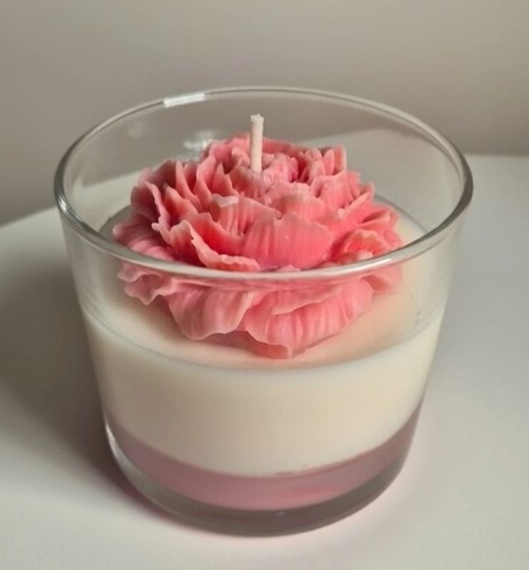
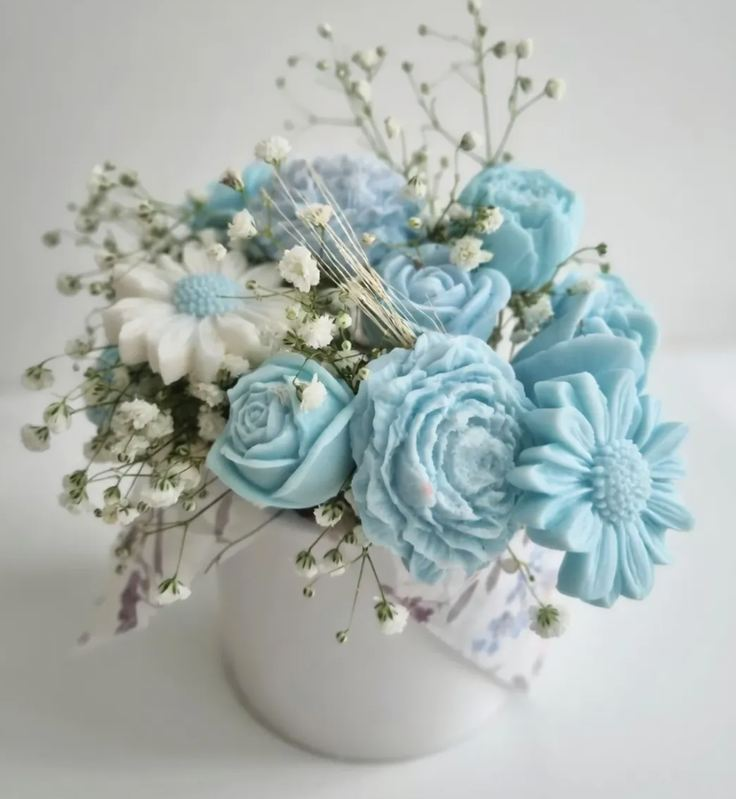
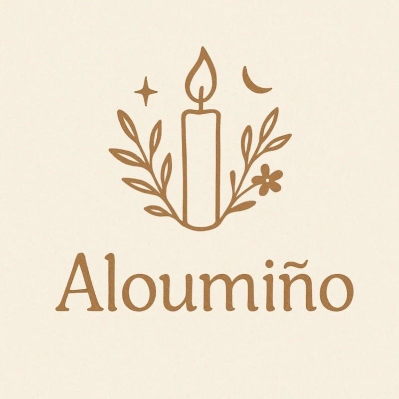
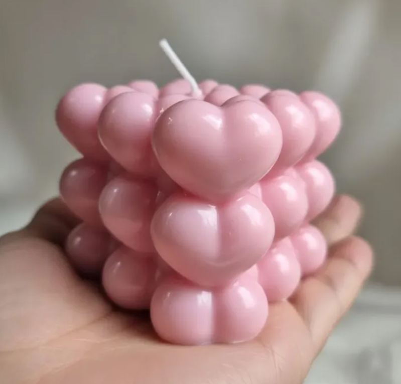
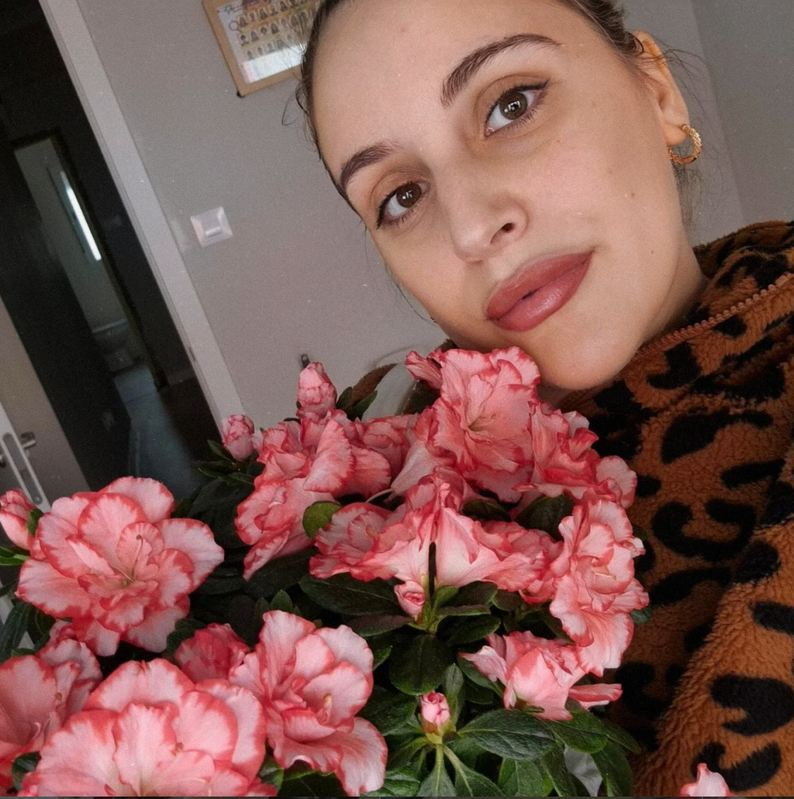
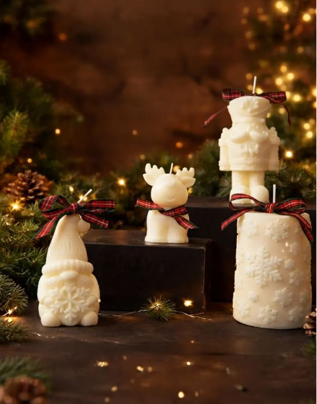
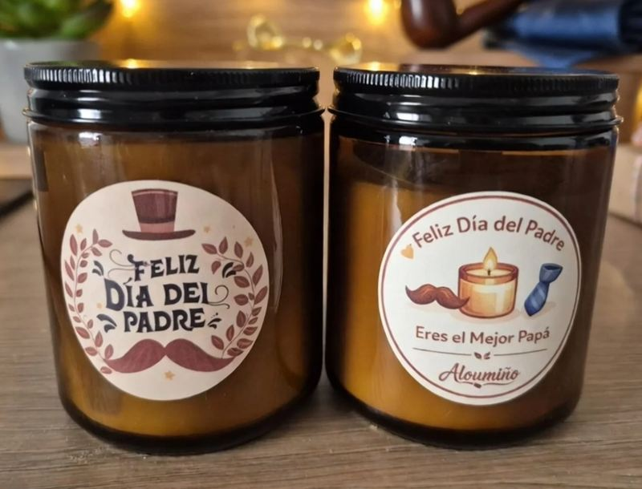
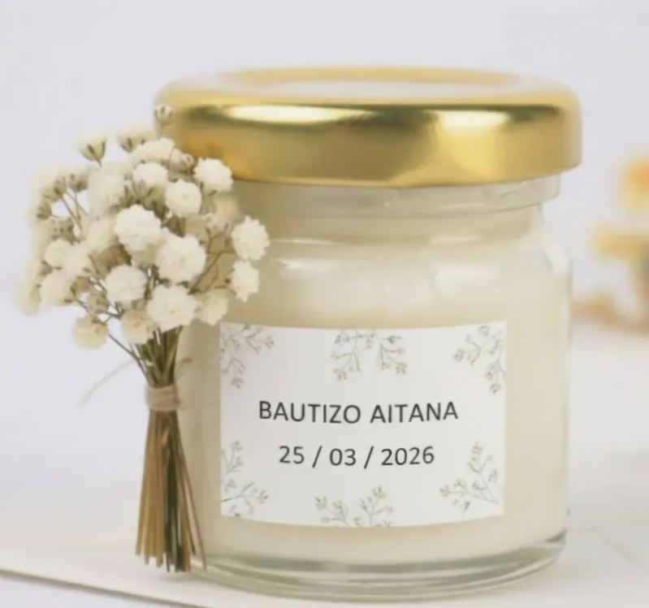

Pequeños momentos de calma, hechos a mano
Velas de cera de soja, flores de cera y detalles creados despacio, con intención y mucho mimo. Para encender en casa, para regalar y para celebrar.
«Aloumiño»: en gallego, caricia, mimo, gesto suave y afectuoso.




Hecho a manoen Galicia

Velas para tu casa y para regalar
Velas aromáticas, figuras, ramos de cera, wax melts y colecciones de temporada.
Ver la tienda
Crea tu propia vela
Talleres creativos en grupos reducidos para aprender, desconectar y llevarte tu creación a casa.
Ver talleres
Tiendas y profesionales
Venta para tiendas, floristerías y negocios, y propuestas conjuntas a medida.
Colabora con AloumiñoCera de soja natural
Materiales naturales y mechas de algodón, elegidos con respeto.
Hecho a mano en Galicia
Cada pieza se elabora despacio, una a una, con su propia personalidad.
Personalizable
Colores, aromas, nombres y mensajes para que sea solo tuyo.
Pensado para regalar
Presentación cuidada y nota personalizada para que llegue con cariño.
Creaciones con alma propia
Cada vela sale de nuestras manos con pequeñas diferencias que la hacen única. Estas son algunas de las que más os gustan.


Hola, soy Naiara
Aloumiño nace en la cocina de mi casa, entre cera de soja, la ayuda de mis hijos y el ronroneo de mis gatos como música de fondo. Nace de la necesidad de bajar el ritmo y crear con las manos pequeños momentos de calma.
Creo que lo cotidiano también puede ser especial: una luz encendida a tiempo, un aroma suave o un momento de silencio pueden cambiar por completo un día.
Conoce nuestra historiaColecciones y celebraciones
Creaciones de temporada y detalles personalizados para los días que merecen recordarse.

Colecciones de temporada
Navidad, otoño, San Valentín, Día de la Madre y del Padre.

Regalos personalizados
Nombres, mensajes, colores y aromas para un regalo único.

Eventos únicos
Detalles para invitados, talleres privados y regalos de empresa.
«Una vela no es solo un objeto, sino un ritual: una emoción que te invita a reconectar contigo y con tu espacio.» Naiara · Aloumiño